무선설비기사 (2016-03-05 기출문제)
1과목: 디지털 전자회로
1. 다음 중 교류입력의 반주기에 대해 브리지 정류기의 다이오드 동작조건에 대한 설명으로 옳은 것은?
- 한 개의 다이오드가 순방향 바이어스이다.
- 두 개의 다이오드가 순방향 바이어스이다.
- 모든 다이오드가 순방향 바이어스이다.
- 모든 다이오드가 역방향 바이어스이다.
(정답률: 81%)

2. 다음 정류회로의 명칭은?
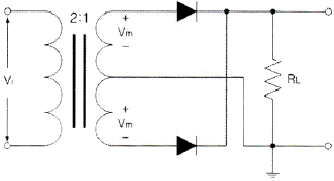
- 단상반파 정류회로
- 3상반파 정류회로
- 단상전파 정류회로
- 브릿지전파 정류회로
(정답률: 74%)
3. 다음 정전압회로에서 제너 다이오드의 내부저항(rd)는 2[Ω]이고, 입력 직렬저항 (Rs)는 500[Ω]일 경우 전압 안정계수(S)는 약 얼마인가?
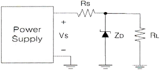
- 0.004
- 0.0⑤
- 0.006
- 0.007
(정답률: 76%)
4. 다음 중 트랜지스터(Transistor)를 달링턴 접속하였을 경우에 대한 설명으로 틀린 것은?
- 전류이득이 높아진다.
- 입력임피던스가 낮아진다.
- 전압이득은 1보다 작다.
- 출력임피던스가 낮아진다.
(정답률: 61%)
5. 다음 중 베이스 접지 증폭기에 대한 설명으로 틀린 것은?
- 다른 접지증폭 방식에 비해 전압이득을 크게 할 수 있다.
- 출력임피던스가 다른 접지증폭 방식에 비해 높다.
- 전류이득은 대략 1이다.
- 입력과 출력간의 위상은 반전이다.
(정답률: 74%)
6. 다음 중 부궤환 증폭기의 장점이 아닌 것은?
- 주파수 특성이 개선된다.
- 부하변동에 의한 이득 변동의 감소로 동작이 안정된다.
- 일그러짐이 감소한다.
- 전력효율이 좋아진다.
(정답률: 63%)
7. 다음 그림에서 입력전압 Vi는? (단, R1=2R2)
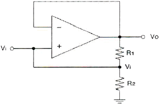
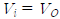
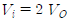
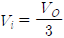
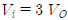
(정답률: 75%)
8. 다음 중 발진을 유지하기 위한 조건이 아닌 것은?
- 증폭기의 출력이 유지되는 방향으로 궤환이 일어나야 한다.
- 궤환루프의 위상천이가 0˚이어야 한다.
- 전체 폐루프의 전압이득이 (Ad)이 0이어야 한다.
- 발진의 안정조건은 |Aβ|=1이어야 한다. (A: 증폭기 증폭도, β: 궤환율)
(정답률: 71%)
9. 다음 중 정현파 발진기의 종류가 아닌 것은?
- CR 발진기
- LC 발진기
- 수정발진기
- 멀티바이브레이터
(정답률: 79%)
10. 다음 중 슈퍼헤테로다인(Superheterodyne) 검파방식의 주파수 성분을 구하는 방법으로 틀린 것은?
- 영상주파수 = 수신주파수 + (2×중간주파수)
- 국부발진주파수 = 수신주파수 - 중간주파수
- 혼신주파수 = 영상주파수 - 국부발진주파수
- 중간주파수 = 국부발진주파수 + 영상주파수
(정답률: 73%)
11. 다음 중 주파수변조를 진폭변조와 비교한 설명으로 틀린 것은?
- 점유주파수대폭이 넓다.
- 초단파대의 통신에 적합하다.
- S/N비가 좋아진다.
- Echo의 영향이 많아진다.
(정답률: 76%)
12. 일정시간 동안 200개의 비트가 전송되고, 전송된 비트 중 15개의 비트에 오류가 발생하면 비트 에러율(BER)은?
- 7.5[%]
- 15[%]
- 30[%]
- 40.5[%]
(정답률: 83%)
13. 다음 중 입력 신호에서 어떤 특정된 제어 시간의 신호만 출력되도록 할 목적으로 사용하는 회로는?
- 슬라이싱(Slicing) 회로
- 클램퍼(Clamper) 회로
- 클리핑(Clipping) 회로
- 게이트(Gate) 회로
(정답률: 69%)
14. 다음 중 멀티바이브레이터의 동작과 관계가 없는것은?
- 전원전압이 변동해도 발진주파수에는 변화가 없다.
- 출력에 고차의 고조파를 포함한다.
- 회로의 시정수로 출력파형의 주기가 결정된다.
- 부궤환으로 이루어진 회로이다.
(정답률: 62%)
15. 8진수 (67)8을 16진수로 바르게 표기한 것은?
- (43)16
- (37)16
- (55)16
- (34)16
(정답률: 82%)
16. 다음 논리 회로는 어떤 논리 게이트(Logic Gate)로 동작하는가?
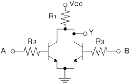
- OR
- NOR
- NAND
- AND
(정답률: 65%)
17. 논리식 A(A+B+C)를 간단히 하면?
- A
- 1
- 0
- A+B+C
(정답률: 80%)
18. 5비트 2진 카운터의 입력에 4[MHz]의 정방향 펄스가 가해질 때 출력 펄스의 주파수는?
- 25[kHz]
- 50[kHz]
- 250[kHz]
- 125[kHz]
(정답률: 64%)
19. 비동기식 5진 카운터(Counter) 회로는 최소 몇 개의 플립플롭(Flip-Flop)이 필요한가?
- 4
- 3
- 2
- 1
(정답률: 80%)
20. 다음 그림과 같은 회로의 명칭은?
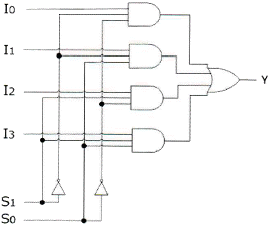
- 병렬가산기
- 멀티플렉서
- 디멀티플렉서
- 디코더
(정답률: 81%)
2과목: 무선통신 기기
21. 다음 중 AM 수신기에서 사용되는 잡음 억제 회로의 종류가 아닌 것은?
- ANL(Automatic Noise Limiter) 회로
- 스켈치(Squelch) 회로
- 뮤팅(Muting) 회로
- AGC(Automatic Gain Control) 회로
(정답률: 78%)
22. 다음 중 단측파대(SSB) 송수신기에 대한 설명으로 틀린 것은?
- 송신기가 소형이고 무게가 가볍다.
- 적은 송신전력으로 통신이 가능하다.
- 송수신기의 회로구성이 단순하다.
- 점유주파수대폭이 1/2로 축소된다.
(정답률: 74%)
23. 다음 중 수신기에서 고주파 증폭회로의 역할로 적합하지 않은 것은?
- 수신기의 감도 개선
- 불필요한 전파발사 억제
- 근접주파수 선택도 개선
- 안테나와의 정합 용이
(정답률: 62%)
24. 다음 중 OFDM(Orthogonal Frequency Division Multiplexing)에 대한 설명으로 틀린 것은?
- 다수 반송파 시스템으로서 반송파 사이에 직교성이 보장되도록 한다.
- 주파수 선택성 페이딩이나 협대역 간섭에 강인하게 사용할 수 있다.
- 송수신단에서 복수의 반송파를 변복조하기 위해 IFFT/FFT를 사용할 수 있으므로 간단한 구조로 고속 구현이 가능하다.
- 부반송파들을 분리하기 위해 보호대역이 필요하다.
(정답률: 75%)
25. QPSK(Quadrature Phase Shift Keying) 신호의 전송속도가 4,000[bps]이면 보(baud) 속도는 얼마인가?
- 1,000[Baud]
- 2,000[Baud]
- 4,000[Baud]
- 8,000[Baud]
(정답률: 74%)
26. 다음 중 송신 전력과 전송로 환경이 같을 때, 비트 에러확률이 8PSK와 16PSK 사이에 해당하는 변조방식은?
- 8QAM
- 16QAM
- 32QAM
- 256QAM
(정답률: 75%)
27. 위성 통신에서 사용되는 주파수 대역 중 12.5~18[GHz]를 무엇이라고 하는가?
- C
- Ku
- Ka
- X
(정답률: 86%)
28. 다음 중 Microwave 무선 중계방식에서 폭우의 영향이 가장 크게 나타나는 주파수대는?
- 10[GHz]
- 8[GHz]
- 6[GHz]
- 4[GHz]
(정답률: 80%)
29. 다음 중 레이더의 기능에 의한 오차에 속하지 않는 것은?
- 해면반사
- 거리오차
- 방위오차
- 선박 경사에 의한 오차
(정답률: 82%)
30. 다음 중 정지궤도위성을 이용한 통신방식의 장점이 아닌 것은?
- 3개의 위성으로 극지방을 제외한 전 세계 통신망 구성이 가능하다.
- Point To Point 네트워크 구성이 가능하다.
- 전파지연이 크지만 전송손실이 거의 없어 효율이 높다.
- 위성을 추적할 필요가 없다.
(정답률: 73%)
31. 다음 중 UPS(Uninterruptible Power Supply)의 구성 방식에 대한 설명으로 틀린 것은?
- ON-LINE 방식 : 상용전원을 컨버터 회로에 의해 직류로 바꾸고 이를 축전지에 충전하고 인버터 회로를 통해 교류전원으로 바꾼다.
- Hybrid 방식 : 상용전원은 그대로 출력으로 내보내며 축전지는 충전회로를 통해 충전한다.
- LINE 인터랙티브 방식 : 축전지와 인버터 부분이 항상 접속되어 서로 전력을 변환하고 있다.
- OFF-LINE 방식 : 입력측의 변동된 전원이 부하측의 출력으로 공급되어 출력에 영향을 줄 수 있다.
(정답률: 82%)
32. 다음 중 교류성분인 맥동(리플)을 제거함으로써 직류성분만을 얻게하기 위해 사용하는 회로는 무엇인가?
- 정류회로
- 중계회로
- 평활회로
- 정전압회로
(정답률: 78%)
33. 평활회로에서 콘덴서 입력형에 대한 설명으로 적절치 못한 것은?
- 직류 출력 전압이 높다.
- 역전압이 높다.
- 전압 변동률이 크다.
- 저전압, 대전류에 이용한다.
(정답률: 69%)
34. 다음 중 DC-DC 컨버터의 구성요소가 아닌 것은?
- 구형파 발생기
- 정류회로
- 정전압회로
- 버퍼회로
(정답률: 66%)
35. 기본파 전압이 10[V], 제2고조파 전압이 4[V], 제3고조파 전압이 3[V]일 때 전압왜율은 몇 [%]인가?
- 10[%]
- 25[%]
- 50[%]
- 80[%]
(정답률: 78%)
36. 수신기의 안정도는 수신기를 구성하는 어떤 구성요소의 주파수 안정도에 의해 결정되는가?
- 동조회로
- 고주파 증폭기
- 국부 발진기
- 검파기
(정답률: 79%)
37. 다음 중 FM수신기의 감도 측정 방법으로 적합한 것은?
- 잡음 증가감도에 의한 측정방법
- 이득 증가감도에 의한 측정방법
- 잡음 억압감도에 의한 측정방법
- 이득 억압감도에 의한 측정방법
(정답률: 81%)
38. 다음 중 안테나의 접지저항을 측정하는 방법으로 적합하지 않은 것은?
- Q메터법
- 비헤르트법
- 코올라우시 브리지법
- 휘스톤 브리지법
(정답률: 64%)
39. 전압 변동률을 d, 부하시 직류 출력전압을 Vn, 무부하시 직류 출력전압을 Vo라 할 때, Vo를 바르게 나타낸 것은?
- Vo = Vn (1+d)
- Vo = Vn (1-d)
- Vo = Vn / (1+d)
- Vo = Vn / (1-d)
(정답률: 75%)
40. 다음 중 니켈-카드뮴 축전지에 대한 설명으로 틀린 것은?
- 알칼리 축전지의 한 종류이다.
- 부하가 작은 용도에 주로 사용된다.
- 과충전 및 과방전에 약하다.
- 대부분 밀폐형으로 저에너지밀도이다.
(정답률: 69%)
3과목: 안테나 공학
41. 자유공간에서, 전파가 20[μs]동안 전파되었을 때 진행한 거리는?
- 2[km]
- 6[km]
- 20[km]
- 60[km]
(정답률: 78%)
42. 변화하고 있는 자계는 전계를 발생시키고 또 반대로 변화하고 있는 전계는 자계를 발생시키는 사실을 나타내고 있는 것은?
- Maxwell 방정식
- Lentz 방정식
- Poynting 방정식
- Laplace 방정식
(정답률: 86%)
43. 다음 중 전자파의설명으로 틀린 것은?
- 전계와 자계가 이루는 평면에 수직으로 진행하는 파
- 진동 방향에 평행인 방향으로 진행하는 파
- 전계와 자계가 서로 얽혀 도와가며 고리 모양으로 진행하는 파
- TE(횡전파), TM(횡자파), TEM(횡전자파)의 합성파
(정답률: 75%)
44. 가장 이상적인 VSWR(Voltage Standing Wave Ratio)의 값은 얼마인가?
- 0
- ∞
- 1
- 10
(정답률: 78%)
45. 다음 평행 2선식 급전선 중 특성 임피던스가 가장 높은 것은 어느 것인가?
- 선직경 1.2[mm], 선간격 20[cm]
- 선직경 1.2[mm], 선간격 30[cm]
- 선직경 2.4[mm], 선간격 30[cm]
- 선직경 2.4[mm], 선간격 20[cm]
(정답률: 73%)
46. 다음 중 급전선과 안테나 사이에 임피던스 정합을 하는 이유로 적합하지 않은 것은?
- 최대 전력을 전송한다.
- 급전선에서의 손실 증가를 방지한다.
- 정재파비를 크게 한다.
- 부정합 손실이 적다.
(정답률: 76%)
47. 다음 중 N개의 Port가 있는 N-Port 소자의 입출력 특성을 알고자 할 때 고주파 파라미터로 사용되는 것은?
- Impedance Matrix
- Admittance Matrix
- Scattering Matrix
- Transmission(ABCD) Matrix
(정답률: 77%)
48. 다음 중 안테나의 급전선에 스터브(Stub)를 부착하는 이유는?
- 안테나의 서셉턴스 성분을 제거하여 대역폭을 증가시키기 위하여
- 복사전력을 증폭시키기 위하여
- 안테나의 지향성을 높이기 위하여
- 안테나 리액턴스 성분을 제거하여 임피던스를 정합시키기 위하여
(정답률: 81%)
49. 자유공간에서 주파수 15[MHz]의 전파를 방사하는 미소 다이폴안테나로부터 거리 d[m]인 곳의 복사전계와 유도전계의 세기가 같아졌다면, 이 때의 거리 d는 몇 [m]인가?
- 0.6[m]
- 1.6[m]
- 3.2[m]
- 6.4[m]
(정답률: 63%)
50. 10[μV/m]의 전계강도를 dB 단위로 표시하면 얼마인가? (단, 1[μV/m]를 0[dB]로 한다.)
- 10[dB]
- 20[dB]
- 30[dB]
- 40[dB]
(정답률: 67%)
51. 다음 중 빔(Beam) 안테나에 대한 설명으로 틀린 것은?
- 마르코니형, 텔레푼켄형 및 스텔바형 등이 있다.
- 지향성이 예리하다.
- 큰 복사전력을 얻을 수 있다.
- 주로 낮은 주파수(LF 대역 이하)에서 사용된다.
(정답률: 74%)
52. 야기안테나의 소자 중 가장 긴 소자의 역할과 리액턴스 성분은 무엇인가?
- 복사기, 용량성
- 지향기, 유도성
- 반사기, 유도성
- 도파기, 용량성
(정답률: 77%)
53. 다음 중 방사성 접지에 대한 설명으로 틀린 것은?
- 지중 동판식이라고도 한다.
- 접지 저항은 약 5[Ω] 정도이다.
- 중파 방송용 안테나에 주로 사용된다.
- 여러 동선을 안테나를 중심으로 방사형으로 땅속에 매설한다.
(정답률: 73%)
54. 다음 중 가상접지에 대한 설명으로 틀린 것은?
- 대지의 도전율이 나쁜 곳에서 사용된다.
- 지상고 2.5[m] 이상에 도체망을 설치하는 방식이다.
- 도체망과 대지사이에 변위전위가 흐르게 하여 접지한다.
- 도체망의 가설 면적을 작게 해야 좋은 효과를 얻을 수 있다.
(정답률: 74%)
55. 등가지구 반경계수가 K일 때 송수신 안테나간의 기하학적 가시거리(d1)와 전파 가시거리(d2)의 관계를 바르게 나타낸 것은?
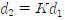
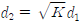
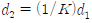
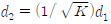
(정답률: 77%)
56. 다음 중 지상에 수직으로 설치된 송수신 안테나간의 거리가 충분히 멀고, 낮은 초단파대 주파수를 사용하는 경우에 수신 전계에 대한 설명으로 틀린 것은?
- 안테나에 흐르는 전류에 비례한다.
- 안테나의 실효고에 비례한다.
- 송수신 안테나 간의 거리에 반비례한다.
- 송신 안테나의 높이가 비례한다.
(정답률: 59%)
57. 다음 중 신틸레이션(Scintillation) 페이딩에 대한 설명으로 틀린 것은?
- 대기 중 공기의 와류에 의한 직접파와 산란파의 간섭으로 발생한다.
- 수신 전계강도의 평균 레벨은 페이딩에 의해 변동이 심하다.
- 겨울보다 여름에 많이 발생한다.
- AGC(Automatic Gain Control)를 이용하여 방지할 수 있다.
(정답률: 50%)
58. 다음 중 전리층의 주간 및 야간의 변화에 대한 설명으로 틀린 것은?
- D층은 야간에 장파대의 전파를 반사시킬 수 있다.
- E층은 주간에 약 10[MHz]의 단파를 반사시킬 수 있다.
- F층은 단파대의 전파를 반사시킬 수 있다.
- Es층은 80[MHz] 정도의 초단파를 반사시킬 수 있다.
(정답률: 74%)
59. 다음 중 전파예보 곡선으로부터 알 수 없는 정보는?
- MUF(Maximum Useable Frequency)
- 주파수의 사용 가능 시간
- 사용 가능 주파수
- 임계 주파수
(정답률: 73%)
60. 마이크로파 송신전력이 1[W](+30[dBm]), 송·수신 안테나의 이득이 각각 40[dB], 수신입력 레벨이 -27[dBm]일 때 자유공간 손실은 얼마인가? (단, 도파관 손실 및 기타 손실은 무시된다.)
- -140[dB]
- -130[dB]
- -137[dB]
- -160[dB]
(정답률: 81%)
4과목: 무선통신 시스템
61. 증폭기의 증폭도(A)가 80, 왜율이 3[%]일 때, 궤환율(β)이 0.⑤의 부궤환을 한다면 왜율은 얼마인가?
- 0.2[%]
- 0.4[%]
- 0.6[%]
- 0.8[%]
(정답률: 57%)
62. 대역폭이 20[kHz]인 5개의 신호를 SSB(Single Side Band) 변조 후 FDM(Frequency Division Multiplexing)으로 다중화하였다. 이 때 다중화된 신호를 전송하기 위한 최소 대역폭은?
- 75[kHz]
- 100[kHz]
- 125[kHz]
- 150[kHz]
(정답률: 76%)
63. 이득이 12[dB]이고 잡음지수가 14[dB]인 증폭기의 후단에 잡음지수가 16[dB]인 증폭기를 연결할 경우 종합잡음지수는 약 얼마인가?
- 15.25[dB]
- 16.25[dB]
- 17.25[dB]
- 18.25[dB]
(정답률: 63%)
64. 다음 중 백색잡음(White Noise)에 대한 설명으로 적합하지 않은 것은?
- 열 잡음이 대표적인 예이다.
- 레일리(Rayleigh) 분포특성을 보인다.
- 백색잡음은 신호에 더해지는 형태이다.
- 주파수 전 대역에 걸쳐 전력스펙트럼 밀도가 거의 일정하다.
(정답률: 79%)
65. 다음 마이크로파 중계방식 중 송수신기의 중간주파수가 동일하기 때문에 회선의 상호접속과 분기가 용이한 방식은?
- 직접 중계방식
- 무급전 중계방식
- 헤테로다인 중계방식
- 검파 중계방식
(정답률: 59%)
66. 인공위성 통신망을 이용하여 가장 넓은 지역을 커버하는 광대역 서비스는?
- Mega Cell
- Macro Cell
- Micro Cell
- Pico Cell
(정답률: 83%)
67. 다음 무선채널 파라미터 종류 중 안테나의 위치, 간격 및 이동국의 이동방향 등 주로 공간정보에 따라 그 특성이 변화하는 무선채널은 무엇인가?
- 전파채널(Propagational Channel)
- 공간채널(Spatial Channel)
- 주파수채널(Frequency Channel)
- 이동채널(Mobile Channel)
(정답률: 77%)
68. 다음 중 이동통신 방식에서의 통화는 서로 간에 이동 중에도 통화가 가능해야 하는데 이 때 한 셀(기지국)과의 통화를 이어주는 역할은 무엇인가?
- 주파수 변환
- 로밍(Roaming)
- 핸드 오프(Hand Off)
- 주파수 재사용
(정답률: 81%)
69. 한 지점에서 송신한 신호의 전력이 수신 지역에서 6[dB] 감소되어 수신되었다면 수신지점은 송신지점과 비교해 전력이 몇 배 감소한 것인가?
- 4배 감소
- 6배 감소
- 8배 감소
- 64배 감소
(정답률: 75%)
70. SDTV(Standard-Definition Television)에서 HDTV(High Definition Television)로 발전하면서 해상도가 우수해짐으로 인해 가장 많은 영향을 받는 무선 전송 변수는?
- 전송 주파수
- 다중화 방식
- 안테나 크기
- 대역폭
(정답률: 78%)
71. 다음 중 소비 전력이 가장 작은 무선통신 시스템은?
- Wi-Fi
- Wibro
- Bluetooth
- Wimax
(정답률: 81%)
72. 다음 중 프로토콜(Protocol)에 관한 설명으로 옳은 것은?
- 통신하는 두 지점 사이에 적용되는 규칙이다.
- 통신 연결에서 상/하위 레벨 사이에만 적용된다.
- 소프트웨어 레벨에서만 프로토콜이 적용된다.
- 주로 기술문서 형태로 작성된다.
(정답률: 78%)
73. 다음 중 통신망의 계층구조에 대한 설명으로 잘못된 것은?
- 하나의 계층은 소프트웨어 관점에서 하나의 모듈에만 해당된다.
- 계층은 물리적인 단위가 아니다.
- 통신이 성립하려면 대상 시스템의 같은 계층끼리 프로토콜이 준수되어야 한다.
- ISO에서 일곱 계층으로 나누어진 참조모델을 제안했다.
(정답률: 73%)
74. 통신 프로토콜의 계층화 개념 중 데이터가 상위계층에서 하위계층으로 내려가면서 데이터에 제어정보를 덧붙이게 되는데 이를 무엇이라 하는가?
- Framing
- Flow Control
- Encapsulation
- Transmission Control
(정답률: 79%)
75. 다음 중 하위 계층을 사용하여 응용 프로그램간의 통신에 대한 제어 기능을 수행하며, 상호 대응하는 응용 프로그램 간의 연결의 개시, 관리, 종결을 담당하는 계층은?
- 응용 계층
- 표현 계층
- 세션 계층
- 전달 계층
(정답률: 70%)
76. 다음 중 TCP over Wireless 기술에 해당되지 않는 것은?
- End-to-End Solutions
- Dynamic Host Configuration
- Link Layer Protocols
- Split TCP Approach
(정답률: 70%)
77. 다음 중 무선통신시스템의 설계 계획시 요구되는 시스템의 암호화 도입 방식이 아닌 것은?
- 링크 대 링크(Link - by - Link) 방식
- 트리 대 트리(Tree - by - Tree) 방식
- 엔드 대 엔드(End - by - End) 방식
- 노드 대 노드(Node - by - Node) 방식
(정답률: 79%)
78. 다음 무선망 설계 시 필요한 품질목표 중 사용자가 서비스 접속가능 지역에서 호 시도를 하여 호가 완료될 때까지 통화중단 없이 호가 유지될 수 있는 신뢰성에 대한 확률을 표현하는 것은?
- 통화 커버리지(Call Coverage)
- 서비스 등급(Grade Of Service)
- 통화 품질(Quality of Telephone Call)
- 수신 감도(Receiving Sensitivity)
(정답률: 75%)
79. 다음 중 시스템의 고장(Malfunction) 유형이 아닌 것은?
- 영구적인(Permanent) 고장
- 간헐적인(Intermittent) 고장
- 빈번한(Frequent) 고장
- 일시적인(Transient) 고장
(정답률: 73%)
80. 다음 중 잡음방해의 개선 방법으로 적합하지않은 것은?
- 수신 전력을 크게 한다.
- 수신기의 실효대역폭을 넓게 한다.
- 적절한 통신방식을 선택한다.
- 송신전력을 크게 하고 수신기를 차폐한다.
(정답률: 71%)
5과목: 전자계산기 일반 및 무선설비기준
81. 다음 중 DMA(Direct Memory Access)에 대한 설명으로 틀린 것은?
- 주변장치와 기억장치 등의 대용량 데이터 전송에 적합하다.
- 프로그램방식보다 데이터의 전송속도가 느리다.
- CPU의 개입없이 메모리와 주변장치 사이에서 데이터 전송을 수행한다.
- DMA 전송이 수행되는 동안 CPU는 메모리 버스를 제어하지 못한다.
(정답률: 63%)
82. 다음 중 CPU의 하드웨어(Hardware) 요소들을 기능별로 분류할 경우 포함되지 않는 것은?
- 연산 기능
- 제어 기능
- 입출력 기능
- 전달 기능
(정답률: 63%)
83. 다음의 데이터 코드 중 가중치 코드가 아닌 것은?
- 8421 코드
- 바이퀴너리(Biquinary) 코드
- 그레이(Gray) 코드
- 링 카운터(Ring Couter) 코드
(정답률: 77%)
84. 다음 논리회로에 의해 계산된 결과 X는?
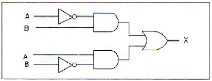
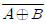
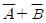
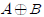
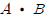
(정답률: 79%)
85. 다음 중 운영체제(Operating System)의 성능을 극대화하기 위한 조건이 아닌 것은?
- 사용 가능도(Availability) 증대
- 신뢰도(Reliability) 향상
- 처리능력(Throughput) 증대
- 응답시간(Turn Around Time) 연장
(정답률: 79%)
86. 다음 내용은 어떤 용어에 대한 설명인가?
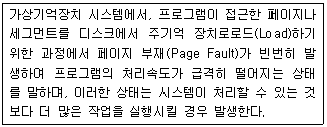
- 오버레이(Overlay)
- 스래싱(Thrashing)
- 데드락(Deadlocks)
- 덤프(Dump)
(정답률: 74%)
87. 다음 내용이 의미하는 소프트웨어는 무엇인가?
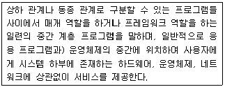
- 유틸리티
- 디바이스 미들웨어
- 응용소프트웨어
- 미들웨어
(정답률: 79%)
88. 다음 프로그램 언어 중 구조적 프로그래밍(Structured Programming)에 적합한 기능과 구조를 갖는 것은?
- BASIC
- FORTRAN
- C
- RPG
(정답률: 81%)
89. 다음 중 마이크로프로세서에 대한 설명으로 틀린 것은?
- 마이크로프로세서는 데이터를 시스템 메모리에 쓰거나 시스템 메모리로부터 읽어 들일 수 있다.
- 마이크로프로세서는 데이터를 입출력장치에 쓰거나 입출력 장치로부터 읽어 들일 수 있다.
- 마이크로프로세서는 시스템 메모리로부터 명령어를 읽어 들일 수 없다.
- 마이크로프로세서는 데이터를 가공할 수 있다.
(정답률: 70%)
90. 16비트 명령어 형식에서 연산코드 5비트, 오퍼랜드1은 3비트, 오퍼랜드2는 8비트일 경우, ⓐ 연산종류와 사용할 수 있는 ⓑ 레지스터의 수를 올바르게 나열한 것은?
- ⓐ 32가지, ⓑ 512
- ⓐ 31가지, ⓑ 8
- ⓐ 32가지, ⓑ 8
- ⓐ 8가지, ⓑ 511
(정답률: 77%)
91. 다음 중 용어의 정의에 대한 설명으로 틀린 것은?
- ‘우주국’이라 함은 우주에 개설한 무선국을 말한다.
- ‘주파수분배’라 함은 특정한 주파수의 용도를 정하는 것을 말한다.
- ‘무선국’이라 함은 무선설비와 무선설비를 조작하는 자의 총체를 말한다.
- ‘실효복사전력’이라 함은 공중선 전력에 주어진 방향에서의 반파 다이폴의 상대이득을 곱한 것을 말한다.
(정답률: 75%)
92. 미래창조과학부장관이 주파수회수 또는 주파수재배치를 함에 있어 당해 시설자에게 통상적으로 발생하는 손실을 보상하여야 하는 경우는?
- 시설자의 요청에 의한 경우
- 전자파 장해로 인한 혼신을 받는 경우
- ITU에서 모든 국가가 공통적으로 수용하여야 할 주파수 국제분배 변경에 따라 주파수분배를 변경한 경우
- 주파수의 용도가 제2순위 업무인 주파수를 사용하는 경우
(정답률: 74%)
93. 전자파 장해를 주거나 전자파로부터 영향을 받는 기자재를 제조 또는 판매하거나 수입하려는 자가 받아야 하는 절차가 아닌 것은?
- 적합등록
- 적합인증
- 잠정인증
- 형식등록
(정답률: 65%)
94. 적합성평가의 취소처분을 받은 자는 취소처분을받은 날로부터 얼마의 범위에서 해당 기자재에 대한 적합성평가를 받을 수 없는가?
- 6개월
- 1년
- 1년 6개월
- 2년
(정답률: 86%)
95. 방송통신기자재의 지정시험기관으로 지정신청을 받은 때 국립전파연구원장은 며칠 이내에 지정여부를 결정하여야 하는가?
- 10일
- 30일
- 60일
- 90일
(정답률: 63%)
96. 470[MHz] 초과 24,500[MHz] 이하의 지상파 디지털 텔레비전방송국의 무선설비의 주파수 허용편차는(백만분율)?
- 1
- 10
- 100
- 1,000
(정답률: 60%)
97. R3E, H3E, J3E 전파형식을 사용하는 모든 무선국의 무선설비 점유주파수대폭의 허용치로 옳은 것은?
- 1[kHz]
- 3[kHz]
- 6[kHz]
- 10[kHz]
(정답률: 85%)
98. 공중선에 공급되는 전력과 등방성 공중선에 대한 임의의 방향에 있어서의 공중선이득의 곱을 의미하는 전력은?
- 반송파전력(PZ)
- 등가등방복사전력(EIRP)
- 규격전력(PR)
- 평균전력(PY)
(정답률: 76%)
99. 무선설비 공사가 품질확보 상 미흡 또는 중대한 위해를 발생시킬 수 있다고 판단될 때 공사 중지를 지시할 수 있으며, 공사 중지에는 부분중지와 전면중지로 구분되는데 전면중지에 해당하는 경우는?
- 재시공 지시가 이행되지 않는 상태에서는 다음 단계의 공정이 진행됨으로써 하자발생이 될 수 있다고 판단될 때
- 안전시공 상 중대한 위험이 예상되어 물적, 인적 중대한 피해가 예견될 때
- 동일 공정에서 3회 이상 시정지시가 이행되지 않을 때
- 천재지변 등 불가항력적인 사태가 발생하여 공사를 계속할 수 없다고 판단될 때
(정답률: 82%)
100. 무선설비 기성 및 준공검사 처리절차가 순서대로 바르게 나열된 것은?
- 검사원 및 감리조서 - 검사원 임명 - 검사실시 - 검사결과 통보 및 검사조서 - 발주자 결재 - 대가지급
- 검사원 임명 - 검사원 및 감리조서 - 검사실시 - 검사결과 통보 및 검사조서 - 발주자 결재 - 대가지급
- 검사원 임명 - 검사원 및 감리조서 - 발주자 결재 - 검사실시 - 검사결과 통보 및 검사조서 - 대가지급
- 검사원 및 감리조서 - 검사원 임명 - 발주자 결재 - 검사실시 - 검사결과 통보 및 검사조서 - 대가지급
(정답률: 82%)
교류입력의 반주기 동안, 브리지 정류기의 다이오드 중 두 개는 항상 순방향 바이어스가 되어 전류가 흐르게 된다. 이는 교류입력의 양/음성 주기에 따라 다이오드가 번갈아가며 바이어스가 바뀌기 때문이다. 나머지 두 개의 다이오드는 역방향 바이어스가 되어 전류가 흐르지 않는다. 이러한 다이오드의 동작으로 인해 교류입력이 직류로 변환된다.